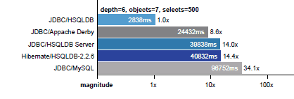

Version 2.5.1
Each release incorporates extensive code reviews,
enhancements and bug fixes.
HSQLDB (HyperSQL DataBase) is the leading SQL relational database system written in Java. It offers a small, fast multithreaded and transactional database engine with in-memory and disk-based tables and supports embedded and server modes. It includes a powerful command line SQL tool and simple GUI query tools.
HSQLDB supports the widest range of SQL Standard features seen in any open source database engine: SQL:2016 core language features and an extensive list of SQL:2016 optional features. It supports full Advanced ANSI-92 SQL with only two exceptions. Many extensions to the Standard, including syntax compatibility modes and features of other popular database engines, are also supported.
Version 2.5.1 is fully
multithreaded and supports high performance 2PL and
MVCC (multiversion concurrency control) transaction control
models. See the list of
features in version 2.5.0.
HSQLDB has been constantly developed over 20 years and is used as a database and persistence engine in over 1700 Open Source Software projects and many commercial products. The latest versions are extremely stable and reliable. It is known for its small size, ability to execute completely or partly in memory, its flexibility and speed.
HSQLDB is completely free to use and distribute under our licenses, based on the standard BSD license and fully compatible with all major open source licenses.

The database performance test package PolePosition compares the performance of relational and object databases for storing objects. We ran the PolePosition 0.4 tests with HSQLDB 2.2.6 embedded and server (both with disk tables with sync-on-commit), Apache Derby embedded and MySQL+InnoDB server. See the results, which show the query processing improvements since HSQLDB 2.0
HyperSQL is developed and published by the The HSQL
Development Group. The group was formed in 2001 and has
released several major versions of the database over the
years. Version 2.0 was released in 2010 with a brand new
transactional core engine and JDBC implementation. The engine
has been developed much further in version 2.5.1.
Direct downloads from SourceForge exceed 2,000,000 copies, with hundreds of millions of copies distributed as part of other software packages.
HyperSQL was selected as the SourceForge Project of the Month for January 2012. An interview with core developers is published here.